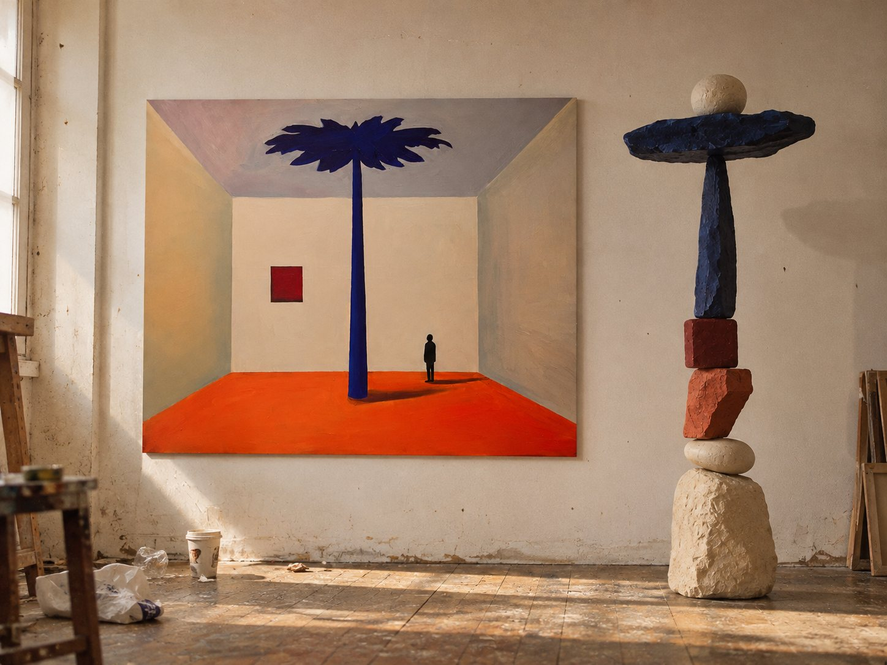

I
The Room That Remembers

Closed Room0:00
- 01G, F, E♭, D. Six times in a row.
- 02Strings held within one octave.
- 03Steady quavers, like a heartbeat.
- 04Small-room reverb. Narrow stereo.
- 05The violin climbs and falls. A minor chord. The figure stays.